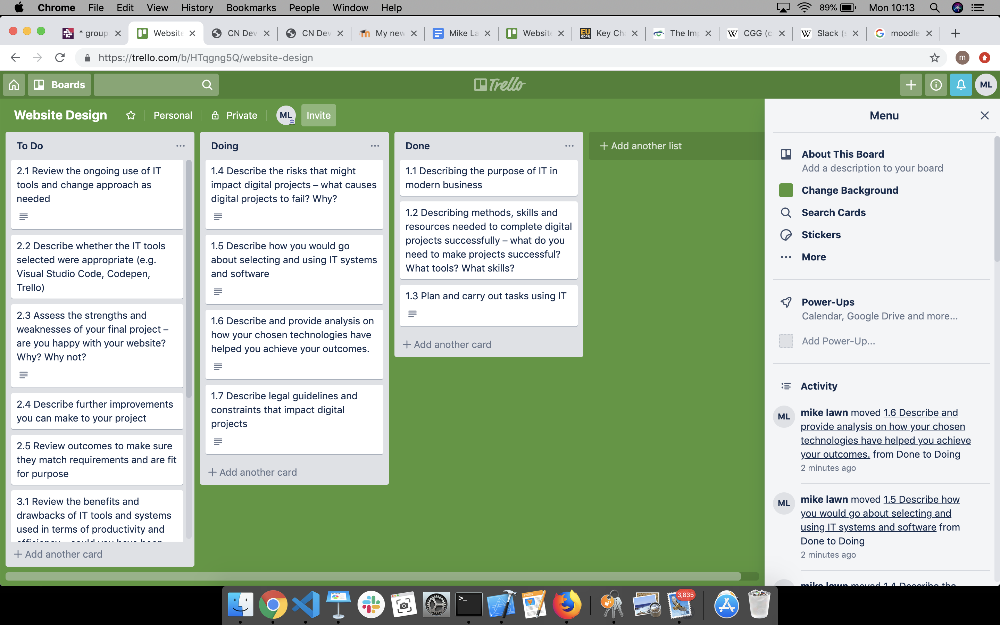
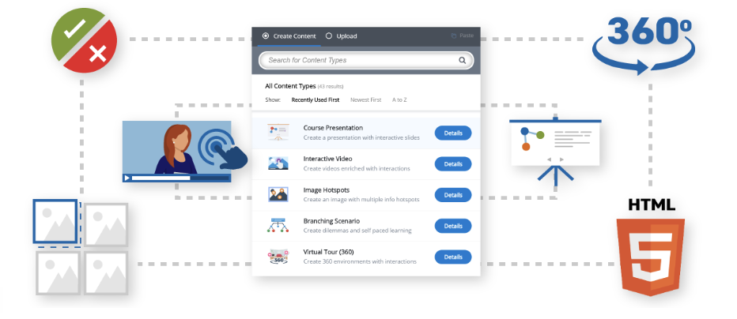
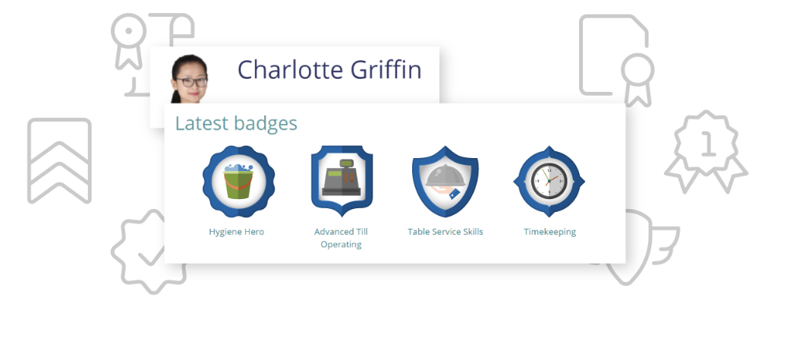

the modern world, a highly capable IT team is the lifeblood of all businesses, no matter the size or sector,
having an IT team that is well-trained is crucial to keeping businesses afloat. Their many responsibilities
are
integral, even if the company takes for granted the importance of the role.
IT teams are responsible for generating, optimising and maintaining the various communication channels of an
organisation, as well as providing those systems with the necessary levels of security. Given how damaging a
data breach can be for a business and their reputation, a lot of trust has to be given to an IT team to take
preventative measures.
The move to digital data storage rather than the “archives of paper” for storage of even the last 2 years
worth
of paperwork, means a lot of sensitive data is now kept in an online cloud or digital server. A good IT team
has
the skills to make sure that additional stock can automatically be ordered when necessary, or manually place
them through the system, ideally allowing a reliable connection between inventory management system with
your
POS system.
Most importantly, your IT team has the capacity to compare your achievements, sales, losses and much more
against other branches of your own business or against its direct competitors. If you want to keep up a good
rivalry for a particular niche of the market, then the ability to cross reference the information across
various
databases can give very specific identification of where you are having issues or striving.
So for a digital project to be most successful, with all the team member’s skillsets utilised to their
fullest, you need some form of project management tool, to assign the tasks amongst the group. A
communication tool
is needed to relay data, progress and troubleshoot issues quickly between a group, especially if the team
isn’t
all located at the same onsite R&D facility. Furthermore if the content of a project is brand new and the
future
“standard” is actually being established alongside the progress of the project, this enables teaching
courses to be generated for teaching these to other team members.
The rest of the needed resources are relevant to the project in question. XCode for example is likely a
must,
when designing an app for IOS. The ideal software to create and code a project would likely be decided on
before, the start of a project
The designing of the website is going to be done on “Visual Studio Code” to write out the html (and later
the
css code), for the website information. The reason for this primarily is the software is multi-platform and
allows me to continue coding my coursework outside of the classroom, using a windows PC, as well as the
provided
macbooks we’ve used for the duration of the course

(https://trello.com/b/HTqgng5Q/website-design)
A lot of the time. What makes a website fail is not adhering to laws and regulations imposed by another
company/website or the GDPR. Digital service providers may encounter big financial sanctions for GDPR
infringements that might greatly impact their businesses or even force them to close all together.
Other than that it could be that one digital project, competing for the same market, out-does another,
whether it be because of lower prices or better services than their competitors. Amazon is a good example of
this,
where the service Alexa provides, plus the already existent low prices of the store, makes a synergy that
encourages people to choose their brand over competitors
The important thing to remember when choosing which software and system to use on a project is deciding what
tool is best suited for the job, beforehand. For example if you’re planning to build an app for IOS/Iphone
then,
whilst a windows pc has the necessary software available to do the coding, the inbuilt features of IOS, the
coding compatibility and especially the simulator are vital features that will aid in the successful
creation of the app.
Equally it is worth
All you have to do is define the stages of your workflow, then setup a way to move each task from one stage
to the other. In a factory, you might have different boxes or shelves for each stage: raw materials in the
first, half-made parts in the second, and completed parts in the third. For other projects, you might have a
card—whether a note in a program, or a physical piece of paper on a board—where you list info about a task,
and you'll move that card to different lists as the task progresses.
Cards (Kanban translates to "visual card"): Each task has a card that includes all relevant info about
it; this makes sure everything to complete the tasks is always at hand.
Cap on work in progress: Limit how many cards are in play at once; this prevents teams from
over-committing. Constant improvement (otherwise known as "kaizen"): Analyze the flow to determine how
efficiently you're working, and always strive to improve it.
The Kanban system is designed for highly cohesive teams, that are self-motivated and don't need as much
management or deadlines. It's great for those who lean toward seeing the entire project at a glance. If you're careful
to follow Kanban rules and only assign as much work as a team can handle, projects are less likely to go past
deadline and team members are less likely to juggle other distractions. Finally because the product owner
can change tasks that aren't currently being worked on along the way, it allows for flexibility without
frustration.
However a weakness in the system is If only one of your team members has a certain in-demand skill, the
individual can hold up everything. Kanban is ideal for teams that have members with overlapping skills,
so that everyone can pitch in and help move the backlog list to zero. It's also best for places where time
on the overall project isn't quite as crucial; if you must ship by certain deadlines, TPM or Scrum give you
the time management structure you need.
Slack offers many IRC-like features, including persistent chat rooms (channels) organized by topic, private
groups, and direct messaging. Content, including files, conversations, and people, is all searchable within
Slack. Users can add emoji buttons to their messages, on which other users can then click to express their
reactions to messages. Slack's free plan allows only the 10,000 most recent messages to be viewed and searched.
Slack teams allow communities, groups, or teams to join a "workspace" via a specific URL or invitation sent by a
team admin or owner. Although Slack was developed for organizational communication, it has been adopted as a
community platform, replacing message boards or social media such as Facebook or LinkedIn groups
Public channels allow team members to communicate without the use of email or group SMS (texting).Public
channels are open to everyone in the workspace. Private channels allow for private conversation between
smaller sub-groups. These private channels can
be used to organize large teams. Direct messages allow users to send private messages to specific users
rather than a group of
people. Direct messages can include up to nine people. Once started, a direct message group can be converted
into a private channel.
Slack integrates with many third-party services and also supports community-built integrations. Major
integrations include services such as Google Drive, Trello, Dropbox, Box, Heroku, IBM Bluemix,
Crashlytics, GitHub, Runscope, Zendesk and Zapier. In December 2015, Slack launched their software
application ("app") directory, consisting of over 150 integrations that users can install
Moodle enables you to design and build courses to cater for virtually any type of learning preference
with
its Interactive Authoring Tool. For projects that are “cutting edge” a project leader can create
engaging
lessons and courses on a specific subject, with tools for collaboration, assessment, communication and
eLearning content within the group.

Build competency frameworks, link to course completion and assign to personal learning plans. It is then
much easier to generate the relevant measures achievement that aligns with your teams’ knowledge and
skill
requirements. Project leaders can even recognise these achievements, as well as motivate other team
members,
still learning, by issuing certificates and Open Badges.
